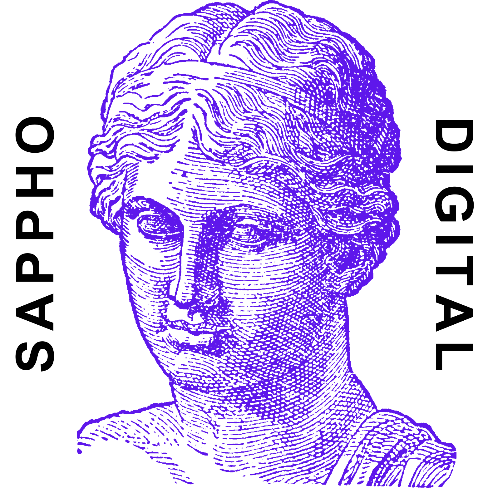

Skip to content

in development
Nominiert für den DH Award 2025 – hier abstimmen
Projekt
Orientierung
Über das Projekt
Publikationen
Bibliographie
Primärtexte
Texte
Sappho-Fragmente
Fragment 1 Voigt
Fragment 2 Voigt
Fragment 3 Voigt
Fragment 4 Voigt
Fragment 5 Voigt
Fragment 6 Voigt
Fragment 7 Voigt
Fragment 8 Voigt
Fragment 9 Voigt
Fragment 12 Voigt
Fragment 15 Voigt
Fragment 16 Voigt
Fragment 17 Voigt
Fragment 18 Voigt
Fragment 19 Voigt
Fragment 20 Voigt
Fragment 21 Voigt
Fragment 22 Voigt
Fragment 23 Voigt
Fragment 24 Voigt
Fragment 25 Voigt
Fragment 26 Voigt
Fragment 27 Voigt
Fragment 28 Voigt
Fragment 29 Voigt
Fragment 30 Voigt
Fragment 31 Voigt
Fragment 32 Voigt
Fragment 33 Voigt
Fragment 34 Voigt
Fragment 35 Voigt
Fragment 36 Voigt
Fragment 37 Voigt
Fragment 38 Voigt
Fragment 39 Voigt
Fragment 40 Voigt
Fragment 41 Voigt
Fragment 42 Voigt
Fragment 43 Voigt
Fragment 44 Voigt
Fragment 44a Voigt
Fragment 45 Voigt
Fragment 46 Voigt
Fragment 47 Voigt
Fragment 48 Voigt
Fragment 49 Voigt
Fragment 50 Voigt
Fragment 51 Voigt
Fragment 52 Voigt
Fragment 53 Voigt
Fragment 54 Voigt
Fragment 55 Voigt
Fragment 56 Voigt
Fragment 57 Voigt
Fragment 58 Voigt
Fragment 59 Voigt
Fragment 60 Voigt
Fragment 61 Voigt
Fragment 62 Voigt
Fragment 63 Voigt
Fragment 64 Voigt
Fragment 65 Voigt
Fragment 66 Voigt
Fragment 67 Voigt
Fragment 68 Voigt
Fragment 69 Voigt
Fragment 70 Voigt
Fragment 71 Voigt
Fragment 72 Voigt
Fragment 73 Voigt
Fragment 74 Voigt
Fragment 75 Voigt
Fragment 76 Voigt
Fragment 77 Voigt
Fragment 78 Voigt
Fragment 79 Voigt
Fragment 80 Voigt
Fragment 81 Voigt
Fragment 82 Voigt
Fragment 83 Voigt
Fragment 84 Voigt
Fragment 85 Voigt
Fragment 86 Voigt
Fragment 87 Voigt
Fragment 88 Voigt
Fragment 90 Voigt
Fragment 91 Voigt
Fragment 92 Voigt
Fragment 93 Voigt
Fragment 94 Voigt
Fragment 95 Voigt
Fragment 96 Voigt
Fragment 97 Voigt
Fragment 98 Voigt
Fragment 100 Voigt
Fragment 101 Voigt
Fragment 101a Voigt
Fragment 102 Voigt
Fragment 103 Voigt
Fragment 103a Voigt
Fragment 103b Voigt
Fragment 103c Voigt
Fragment 104 Voigt
Fragment 105 Voigt
Fragment 106 Voigt
Fragment 107 Voigt
Fragment 108 Voigt
Fragment 109 Voigt
Fragment 110 Voigt
Fragment 111 Voigt
Fragment 112 Voigt
Fragment 113 Voigt
Fragment 114 Voigt
Fragment 115 Voigt
Fragment 116 Voigt
Fragment 117 Voigt
Fragment 117a Voigt
Fragment 117b Voigt
Fragment 118 Voigt
Fragment 119 Voigt
Fragment 120 Voigt
Fragment 121 Voigt
Fragment 122 Voigt
Fragment 123 Voigt
Fragment 124 Voigt
Fragment 125 Voigt
Fragment 126 Voigt
Fragment 127 Voigt
Fragment 128 Voigt
Fragment 129 Voigt
Fragment 130 Voigt
Fragment 132 Voigt
Fragment 133 Voigt
Fragment 134 Voigt
Fragment 135 Voigt
Fragment 136 Voigt
Fragment 137 Voigt
Fragment 138 Voigt
Fragment 139 Voigt
Fragment 140 Voigt
Fragment 141 Voigt
Fragment 142 Voigt
Fragment 143 Voigt
Fragment 144 Voigt
Fragment 145 Voigt
Fragment 146 Voigt
Fragment 147 Voigt
Fragment 148 Voigt
Fragment 149 Voigt
Fragment 150 Voigt
Fragment 151 Voigt
Fragment 152 Voigt
Fragment 153 Voigt
Fragment 154 Voigt
Fragment 155 Voigt
Fragment 156 Voigt
Fragment 157 Voigt
Fragment 158 Voigt
Fragment 159 Voigt
Fragment 160 Voigt
Fragment 161 Voigt
Fragment 162 Voigt
Fragment 163 Voigt
Fragment 164 Voigt
Fragment 165 Voigt
Fragment 166 Voigt
Fragment 167 Voigt
Fragment 168 Voigt
Fragment 168a Voigt
Fragment 168b Voigt
Fragment 168c Voigt
Fragment 169 Voigt
Fragment 169a Voigt
Fragment 170 Voigt
Fragment 171 Voigt
Fragment 172 Voigt
Fragment 173 Voigt
Fragment 174 Voigt
Fragment 175 Voigt
Fragment 176 Voigt
Fragment 177 Voigt
Fragment 179 Voigt
Fragment 180 Voigt
Fragment 181 Voigt
Fragment 182 Voigt
Fragment 183 Voigt
Fragment 184 Voigt
Fragment 185 Voigt
Fragment 186 Voigt
Fragment 187 Voigt
Fragment 188 Voigt
Fragment 189 Voigt
Fragment 190 Voigt
Fragment 191 Voigt
Fragment 192 Voigt
PKöln inv. 21351,1–8 (Jenseitsgedicht)
PKöln inv. 21351,9–12+21376r,1–8 (Altersgedicht, ~Fr. 58 Voigt)
Rezeptionszeugnisse
Alle Rezeptionszeugnisse
Prosaische Rezeptionszeugnisse
Lyrische Rezeptionszeugnisse
Dramatische Rezeptionszeugnisse
Sonstige Rezeptionszeugnisse
Analyse
Datenmodell
Ontologie
Ontologie-Alignments
Vokabular
Erläuterungen zur Analyse
Rezeptionsphänomene
Intertextuelle Beziehungen
Personenreferenzen und Figuren
Ortsreferenzen
Werkreferenzen und Zitate
Rhetorische Topoi
Motive
Themen
Stoffe
Statistik
Daten
SPARQL
Netzwerkvisualisierung
GitHub
Orientierungshilfe
Alle Rezeptionszeugnisse
Jahr:
–
▶ Abspielen
Das Fenster ist zu klein, um die Tabelle darstellen zu können.
Entstehungsjahr
Publikations-/Aufführungsjahr
Titel
Text QID
Enthalten in
Werk QID
Autor_in
Autor_in QID
Gattung
Publikations-/Aufführungsort
Ort QID
Verlag/Druckerei
Verlag/Druckerei QID
Digitalisat
Link